- Sunscreens
- Aneve Sunscreen
- Biotherm Sunscreen
- Attitude Sunscreen
- Cleansers
- CeraVe Hydrating Cleanser
- La Roche-Posay Cleanser
- Lancaster
- Toners
- Babor Toner
- Bioderma Toner
- Serums
- The Ordinary - Niacinamide 10% + Zinc 1%
- The Ordinary - Retinol 1%
- Moisturizer
- CeraVe Moisturizing Cream
- Netrogena Hydro Boost
A guide on when to use products:
| Day care | Night care |
|---|---|
| CLEANSER | MAKEUP REMOVER |
| TONER | CLEANSER |
| ANTIOXIDANT SERUM | TONER |
| EYE BALM / CREAM | SERUM / TREATMENT |
| ACNE SPOT TREATMENT | ACNE SPOT TREATMENT |
| MOISTURIZER | EYE CREAM |
| SUNSREEN | MOISTURIZER |
| PRIMER / MAKEUP | LIP MASK |
Sunscreens we recommend
Avene Sunscreen SPF 50+
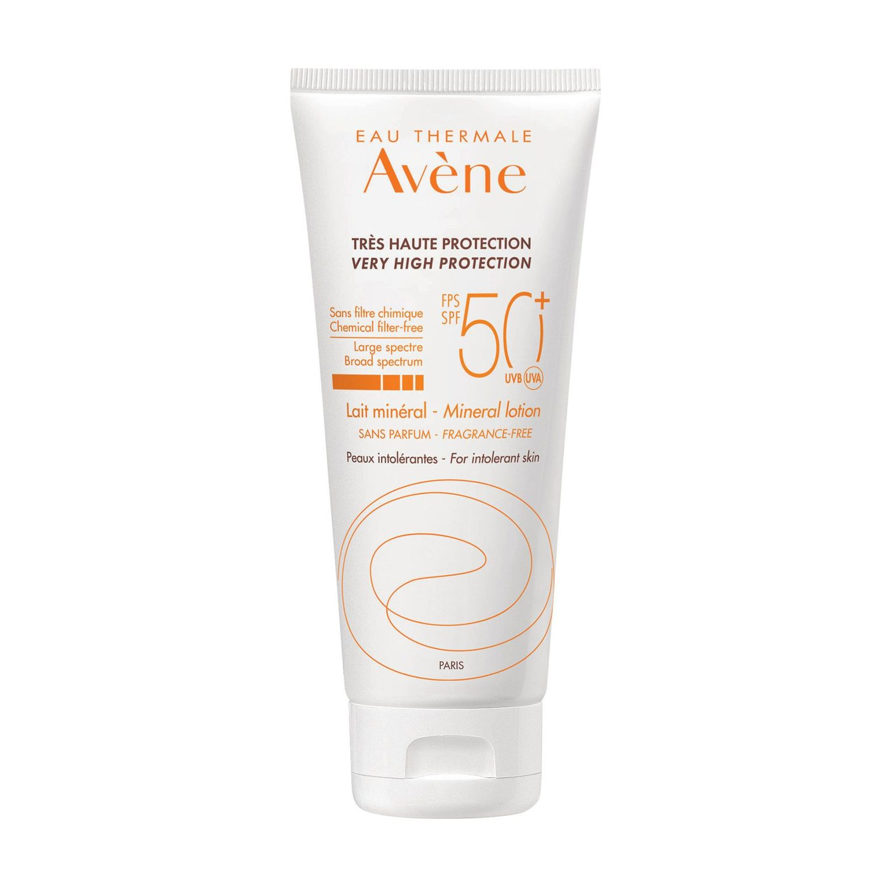Price: 20.83 €
Ingridients: AVENE THERMAL SPRING WATER (AVENE AQUA). C12-15 ALKYL BENZOATE. COCO-CAPRYLATE/CAPRATE...
Scent: Unscented
Product Benefits: antioxidant
Sun protection: 50 SPF
Skin Type: Dry
About this item:
- Ideal balance between pleasure and security
- Light and non greasy texture: invisible, non-oily texture for particularly pleasant application
- Specially formulated for dry skin
- Unique antioxidant complex (Pre-tocopheryl + Pro-taurine), for complete cellular protection against oxidative stress
Biotherm Sunscreen SFP 50
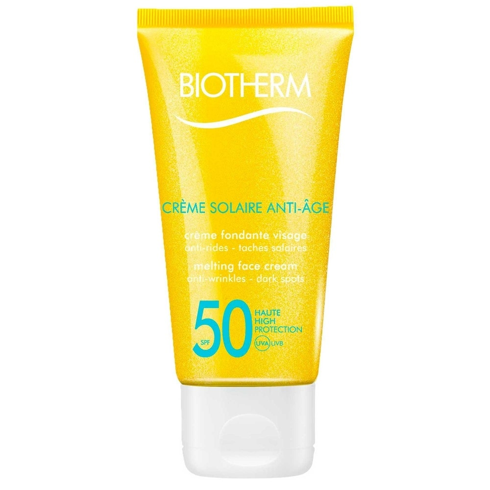Price: 24.13 €
Ingridients: Perfumed alcohol, water, essential oils, natural ingedients
Scent: Sun Care and Bronzers
Sun protection: 50 SPF
Skin type: Dry
About this item:
- Boasts a waterproof and nurturing formula
- Penetrates quickly into skin without leaving a white sticky film
- Contains patented Mexoryl SX and XL filters to protect skin against UVB and UVA rays
Attitude Sunscreen 30
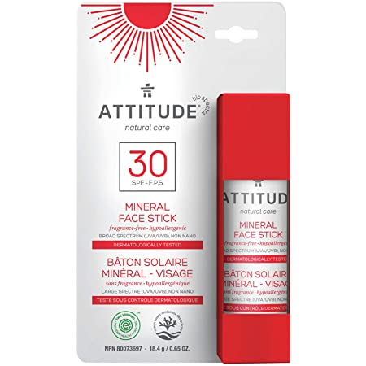Price: 16.24 €
Ingridients: Formulations can be optimized and ingredients may vary. Active Ingredients: Zinc Oxide (20%)...
Scent: Fragrance free
Product: Hypoallergenic, Broad Spectrum UVA
Benefits: Hypoallergenic, Broad Spectrum UVA and UVB, Sea Reef Safe
Sun protection: 30 SPF
About this item:
- Mineral face stick sunscreen that works: UVA and UVB protection, made with non-nano zinc oxide and plant- and mineral-based ingredient
- Handy stick format: Makes applying sunscreen on the go easier
- Dermatologically tested: Hypoallergenic and fragrance-free formula
- Certified sunscreen: ECOLOGO Certified sustainable and Biodegradable & PETA Certified, products are vegan, cruelty-free and never tested on animals
Cleansers we recommend
CeraVe Hydrating Cleanser
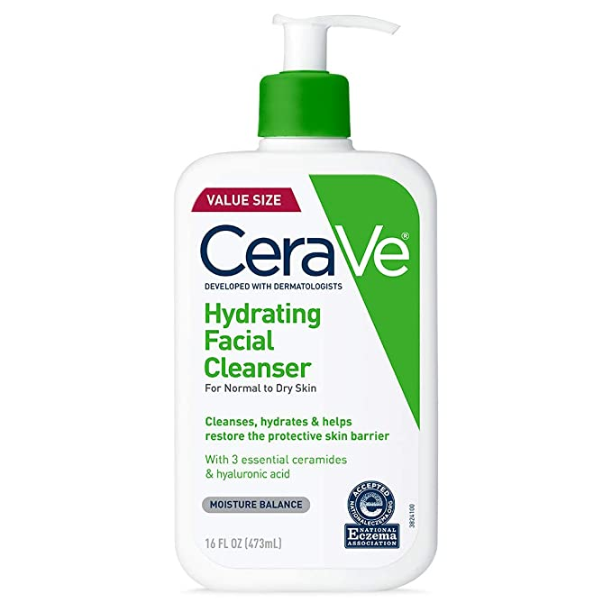Price: 18.65 €
Item Form: Lotion
Brand: CeraVe
Special Ingredients: Hyaluronic Acid, Ceramides and Glycerin
Scent: Fragrance free
About this item:
- [ DAILY FACE WASH ] Gentle cleansing lotion with hyaluronic acid, ceramides, and glycerin to help hydrate skin without stripping moisture
- [ NON-FOAMING CLEANSER ] Moisturizing facial cleanser with a lotion-like consistency feels smooth as it cleanses, even on sensitive, dry skin.
- [ ESSENTIAL CERAMIDES ] Ceramides are found naturally in the skin and make up 50% of the lipids in the skin barrier.
- [ DERMATOLOGIST RECOMMENDED ] CeraVe Skincare is developed with dermatologists and has products suitable for dry skin, sensitive skin, oily skin, acne-prone, and more
La Roche-Posay Cleanser
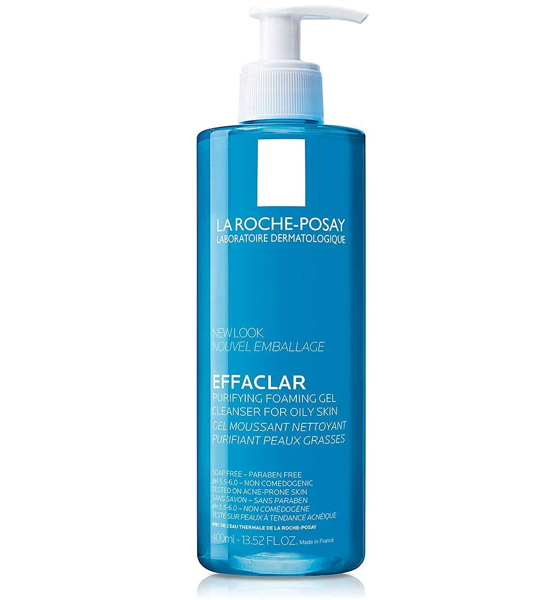Price: 20.14 €
Item form: Gel
Use for: Face
Brand: La Roche-Posay
Special ingedients:Roche-Posay Thermal Spring Water
Skin Type: Acne Prone,Oily,Sensitive
About this item:
- Value size. Gel face wash for oily skin tested on acne-prone skin. Gently cleanses impurities while respecting skin's pH balance.
- Foaming face wash cleanser gently cleanses oily skin without over drying
- Massage face wash gently with lukewarm water to form a rich lather. Rinse with water. Gently pat off.
Lancaster
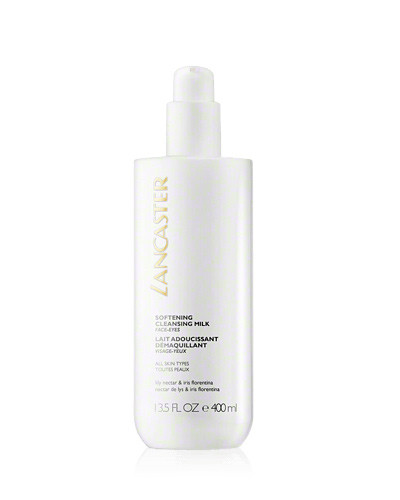Price: 20.34 €
Brand: Lancaster
Item form: Cleansing milk
Scent: Musk, Vanilla
Use for: Face
About this item:
- Lancaster
- Skincare
- Lancaster - Cleanser
- Softening Cleansing Milk
- 400ml/13.5oz
Toners we recommend
Babor Toner
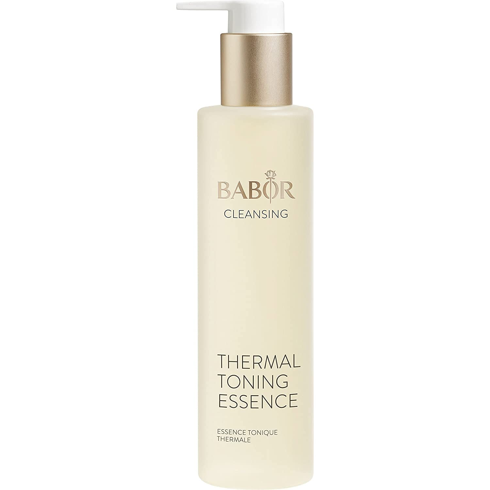Price: 32.70 €
Ingredients: AQUA, PROPANEDIOL, PHENOXYETHANOL, PANTHENOL, ETHYLHEXYLGLYCERIN, POTASSIUM SORBATE, ...
Brand: Babor
Scent: Unscented
Skin type: Dry, All Skin Types
About this item:
- CLEANSING Natural Plant Based Pure Thermal Spring Water Toning Essence For Face. Best Toning Essence for Day and Night - For A More Refreshed Appearance
- Helps prevent congestion. A deep-action cleansing mask with an exfoliating effect to refine the complexion
- Apply thick layer to clean skin for 5-10 min. Wet fingertips, massage in circles, rinse with water. Use2x a week
Bioderma Toner
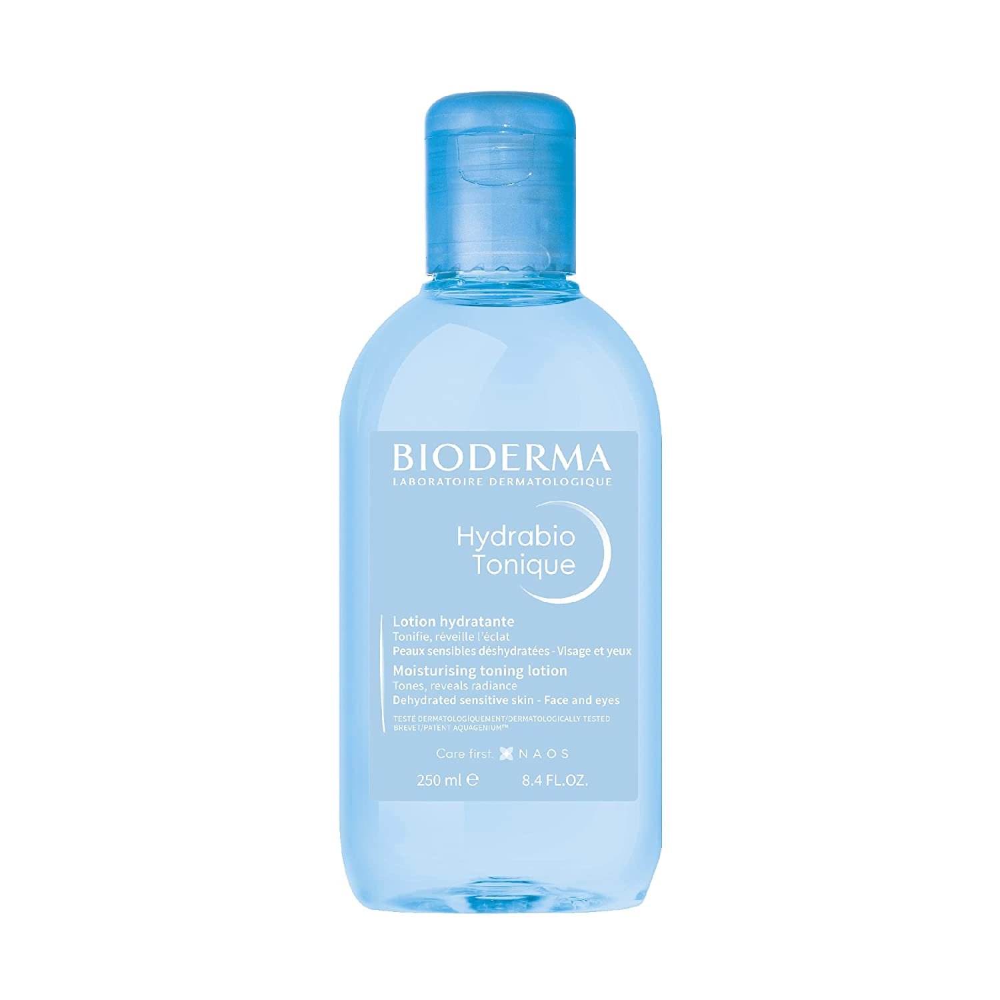Price: 16.32 €
Ingredients: AQUA/WATER/EAU, GLYCERIN, POLYSORBATE 20, MANNITOL, XYLITOL, RHAMNOSE, FRUCTOOLIGOSACCHARIDES
Brand: Bioderma
Skin Type: Dehydrated sensitive skin
Product benefits: Hydrabio Tonic Lotion's use leaves your dehydrated skin clear and moisturized.
About this item:
- Developed in the Bioderma Research laboratories, the Aquagenium patent in Hydrabio Tonic Lotion helps to improve the natural moisturising capacities of the skin.
- Hydrabio Tonic Lotion's use leaves your dehydrated skin clear and moisturized
- Soak a cotton pad and apply on your face and eyes after cleansing. Use morning and evening, every day of the week.
Serums we recommend
The Ordinary - Niacinamide 10% + Zinc 1%
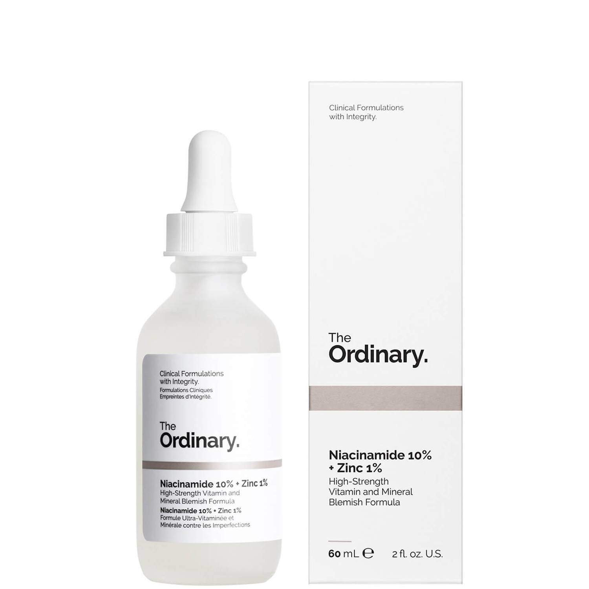Price: 9.90 €
Brand: Trauemy
Item Form: Serum
Use for: Face
Recommended uses for product: Vitamin, Blemishes
About this item:
- Efficacy: This product can effectively improve the skin defects, repair the reddening skin, even the rough pores, balance the oil secretion, reduce the facial oil light, and create the smooth and bright skin for you.
- Usage: After skin care in the morning and evening, apply a small amount of this product to the face before taking care of the oil, moisturizing products and cream. This product cannot be used with products containing pure vitamin C (ascorbic acid)
The Ordinary - Retinol 1%
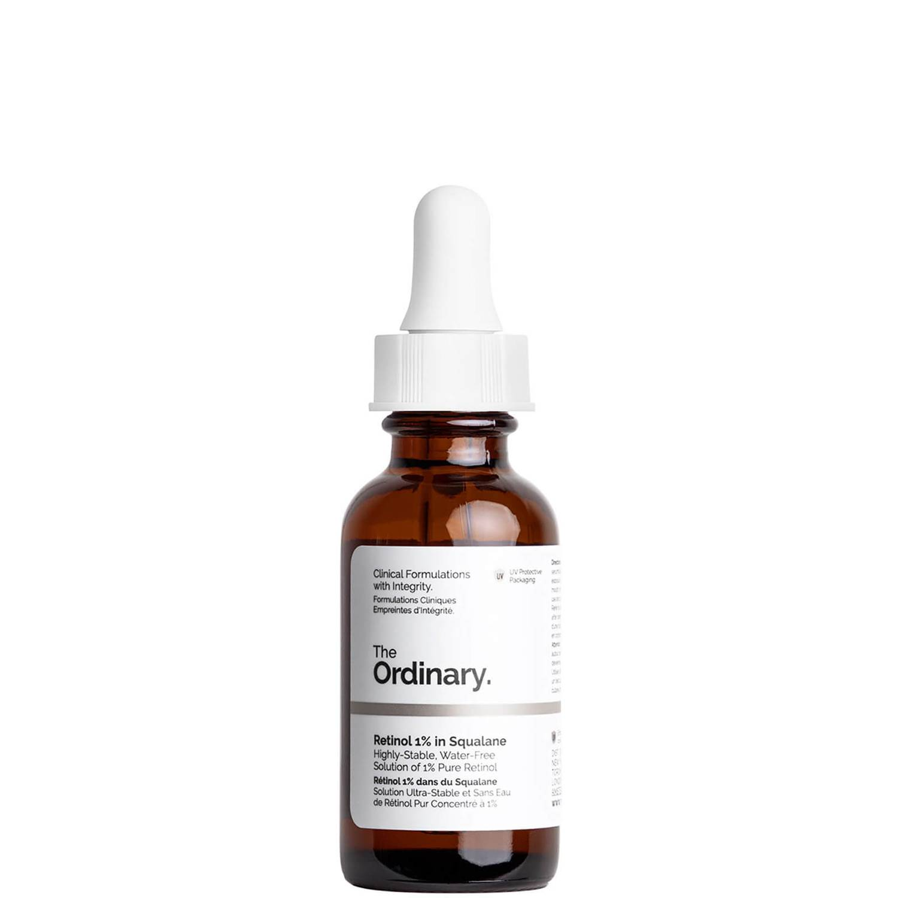Price: 10.90 €
Special ingredients:
Squalane, Caprylic/Capric Triglyceride, Simmondsia Chinensis (Jojoba) Seed Oil, Retinol, Solanum Lycopersicum (Tomato) Fruit Extract, Rosmarinus Officinalis (Rosemary) Leaf Extract, Hydroxymethoxyphenyl Decanone, BHT.
Item Form: Liquid
Brand: The Ordinary
Use for: Face
Speficic uses for product: Anti aging benefits
Patch testing:
- Apply a small amount of the product onto a clean area of skin on the upper forearm.
- Keep the area dry.
- If the product has a specified duration of use, rinse off after this time has elapsed. Otherwise rinse off after 24 hours.
- If any redness, burning, itching, blistering or irritation is observed at any time throughout the test, do not use the product.
Moisturizers we recommend
Netrogena Hydro Boost
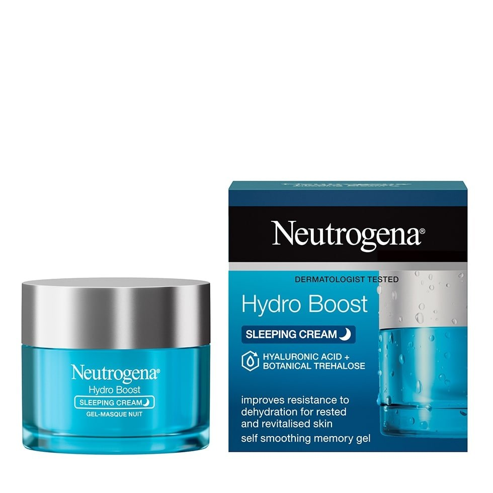Price: 18.55 €
Item form: Lotion, cream, gel
Brand: Neutrogena
Use for: Face
About his item:
- 1.7-fluid ounce jar of Neutrogena Hydro Boost hydrating water-gel face moisturizer with hyaluronic acid to hydrate dry skin
- Gel moisturizer formula provides hydration to skin, leaving it looking smooth and supple day after day
- Hyaluronic acid, a hydrator found naturally in the skin, attracts moisture and locks it in. 100% alcohol free
- Daily face moisturizer features a non-comedogenic formula that is oil-free, and is from a dermatologist-recommended brand
- Unique face moisturizer absorbs quickly like a gel, so you can wear it under makeup, but provides long-last and intense moisturizing power of a cream
CeraVe Moisturizing Cream
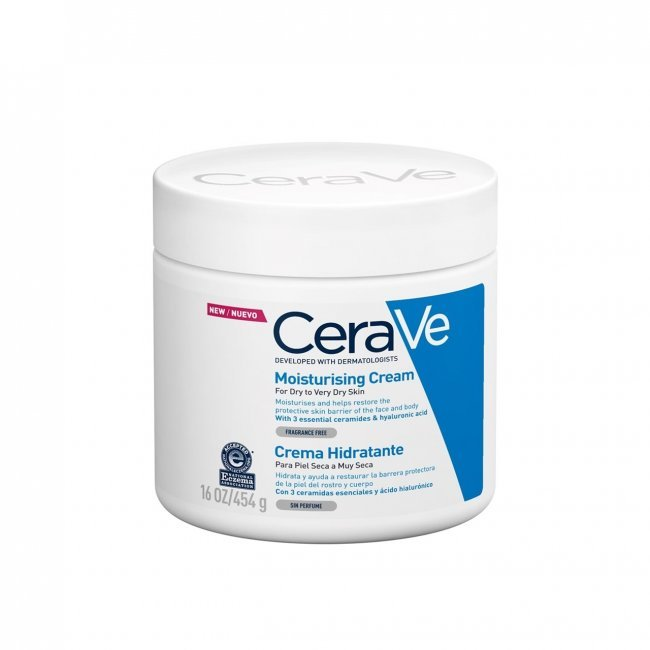Price: 19.05 €
Special ingredients: Hyaluronic Acid, Ceramides
Item Form: Cream
Brand: CeraVe
Specific uses for product: Ance, Eczema, Dryness
About this item:
- [ HYALURONIC ACID MOISTURIZER ] With hyaluronic acid, ceramides and MVE technology for 24 hour hydration.
- [ DERMATOLOGIST RECOMMENDED ] CeraVe Skincare is developed with dermatologists and has products suitable for dry skin, sensitive skin, oily skin, acne-prone, and more.
- [ GENTLE DAILY MOISTURIZER ] For face and body or can be used as a hand cream for dry skin relief.